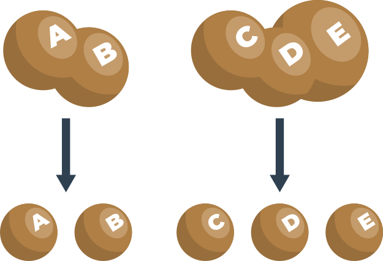
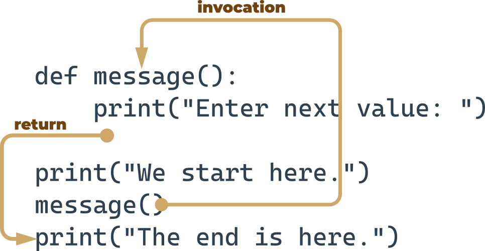
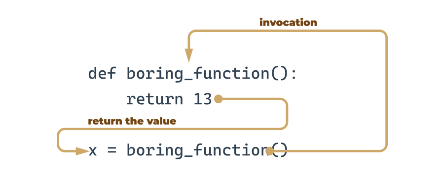

print("Enter a value: ")
a = int(input())
print("Enter a value: ")
b = int(input())
print("Enter a value: ")
c = int(input())Module 4: Functions, Tuples, Dictionaries, Exceptions, and Data Processing
1 Functions
Welcome to Module 4! In this section you will learn how to create, use, and call your own functions.
1.1 Why do we need functions?
You’ve come across functions many times so far, but the view on their merits that we have given you has been rather one-sided. You’ve only invoked functions by using them as tools to make life easier, and to simplify time-consuming and tedious tasks.
When you want some data to be printed on the console, you use print(). When you want to read the value of a variable, you use input(), coupled with either int() or float().
You’ve also made use of some methods, which are in fact functions, but declared in a very specific way.
Now you’ll learn how to write and use your own functions. We’ll write several functions together, from the very simple to the rather complex, which will require your focus and attention.
It often happens that a particular piece of code is repeated many times in your program. It’s repeated either literally, or with only a few minor modifications, consisting of the use of other variables in the same algorithm. It also happens that a programmer cannot resist simplifying their work, and begins to clone such pieces of code using the clipboard and copy-paste operations.
It could end up as greatly frustrating when suddenly it turns out that there was an error in the cloned code. The programmer will have a lot of drudgery to find all the places that need corrections. There’s also a high risk of the corrections causing errors.
We can now define the first condition which can help you decide when to start writing your own functions: if a particular fragment of the code begins to appear in more than one place, consider the possibility of isolating it in the form of a function invoked from the points where the original code was placed before.
It may happen that the algorithm you’re going to implement is so complex that your code begins to grow in an uncontrolled manner, and suddenly you notice that you’re not able to navigate through it so easily anymore.
You can try to cope with the issue by commenting the code extensively, but soon you find that this dramatically worsens your situation ‒ too many comments make the code larger and harder to read. Some say that a well-written function should be viewed entirely in one glance.
A good, attentive developer divides the code (or more accurately: the problem) into well-isolated pieces, and encodes each of them in the form of a function.
This considerably simplifies the work of the program, because each piece of code can be encoded separately, and tested separately. The process described here is often called decomposition.
We can now state the second condition: if a piece of code becomes so large that reading and understating it may cause a problem, consider dividing it into separate, smaller problems, and implement each of them in the form of a separate function.
This decomposition continues until you get a set of short functions, easy to understand and test.

1.2 Decomposition
It often happens that the problem is so large and complex that it cannot be assigned to a single developer, and a team of developers have to work on it. The problem must be split between several developers in a way that ensures their efficient and seamless cooperation.
It seems inconceivable that more than one programmer should write the same piece of code at the same time, so the job has to be dispersed among all the team members.
This kind of decomposition has a different purpose to the one described previously ‒ it’s not only about sharing the work, but also about sharing the responsibility among many developers.
Each of them writes a clearly defined and described set of functions, which when combined into the module (we’ll tell you about this a bit later) will give the final product.
This leads us directly to the third condition: if you’re going to divide the work among multiple programmers, decompose the problem to allow the product to be implemented as a set of separately written functions packed together in different modules.
1.3 Where do functions come from?
In general, functions come from at least three places:
- From Python itself - numeros functions (like
print()) are an integral part of Python, and are always available without any additional effort on behalf of the programmer; we call these functions built-in functions. - From Python’s preinstalled modules - a lot of functions, very useful ones, but used significantly less often than built-in ones, are available in a number of modules installed together with Python; the use of these functions requires some additional steps from the programmer in order to make them fully accessible (we’ll tell you about this in a while).
- Directly from your code - you can write your own functions, place them inside your code, and use them freely.
- There is one other possibility, but it’s connected with classes, so we’ll omit it for now.
1.4 Your first function
Take a look at the snippet in the editor.
It’s rather simple, but we only want it to be an example of transforming a repeating part of a code into a function.
The messages sent to the console by the print() function are always the same. Of course, there’s nothing really bad in such a code, but try to imagine what you would have to do if your boss asked you to change the message to make it more polite, e.g., to start it with the phrase "Please,".
It seems that you’d have to spend some time changing all the occurrences of the message (you’d use a clipboard, of course, but it wouldn’t make your life much easier). It’s obvious that you’d probably make some mistakes during the amendment process, and you (and your boss) would get a bit frustrated.
Is it possible to separate such a repeatable part of the code, name it, and make it reusable? It would mean that a change made once in one place would be propagated to all the places where it’s used.
Of course, a code like this should work only when it’s explicitly launched.
Yes, it’s possible. This is exactly what functions are for.
You need to define it. The word define is significant here.
This is what the simplest function definition looks like:
def function_name():
function_bodyIt always starts with the keyword
def(for define)next after
defgoes the name of the function (the rules for naming functions are exactly the same as for naming variables)after the function name, there’s a place for a pair of parentheses (they contain nothing here, but that will change soon)
the line has to be ended with a colon;
the line directly after
defbegins the function body ‒ a couple (at least one) of necessarily nested instructions, which will be executed every time the function is invoked; note: the function ends where the nesting ends, so you have to be careful.
We’re ready to define our prompting function. We’ll name it message ‒ here it is:
def message():
print("Enter a value: ")The function is extremely simple, but fully usable. We’ve named it message, but you can label it according to your taste. Let’s use it.
Our code contains the function definition now:
def message():
print("Enter a value: ")
print("We start here.")
print("We end here.")We start here.
We end here.Note: we don’t use the function at all ‒ there’s no invocation of it inside the code.
When you run it, you don’t see the message "Enter a value: " on the console.
This means that Python reads the function’s definitions and remembers them, but won’t launch any of them without your permission.
We’ve modified the code now ‒ we’ve inserted the function’s invocation between the start and end messages:
def message():
print("Enter a value: ")
print("We start here.")
message()
print("We end here.")We start here.
Enter a value:
We end here.The output looks different now.
1.5 How functions work
Look at the picture. It tries to show you the whole process:

when you invoke a function, Python remembers the place where it happened and jumps into the invoked function;
the body of the function is then executed;
reaching the end of the function forces Python to return to the place directly after the point of invocation.
There are two, very important, catches. Here’s the first of them:
You mustn’t invoke a function which is not known at the moment of invocation.
Remember - Python reads your code from top to bottom. It’s not going to look ahead in order to find a function you forgot to put in the right place (“right” means “before invocation”.)
We’ve inserted an error into this code ‒ can you see the difference?
del messageprint("We start here.")
message()
print("We end here.")
def message():
print("Enter a value: ")We start here.--------------------------------------------------------------------------- NameError Traceback (most recent call last) Cell In[6], line 2 1 print("We start here.") ----> 2 message() 3 print("We end here.") 6 def message(): NameError: name 'message' is not defined
We’ve moved the function to the end of the code. Is Python able to find it when the execution reaches the invocation?
No, it isn’t. The error message will read:
NameError: name 'message' is not definedDon’t try to force Python to look for functions you didn’t deliver at the right time.
The second catch sounds a little simpler:
You mustn’t have a function and a variable of the same name.
The following snippet is erroneous:
def message():
print("Enter a value: ")
message = 1Assigning a value to the name message causes Python to forget its previous role. The function named message becomes unavailable.
Fortunately, you’re free to mix your code with functions ‒ you’re not obliged to put all your functions at the top of your source file.
Look at the snippet:
print("We start here.")
def message():
print("Enter a value: ")
message()
print("We end here.")We start here.
Enter a value:
We end here.It may look strange, but it’s completely correct, and works as intended.
Let’s return to our primary example, and employ the function for the right job, like here:
def message():
print("Enter a value: ")
message()
a = int(input())
message()
b = int(input())
message()
c = int(input())Modifying the prompting message is now easy and clear - you can do it by changing the code in just one place ‒ inside the function’s body.
1.6 Section summary
1. A function is a block of code that performs a specific task when the function is called (invoked). You can use functions to make your code reusable, better organized, and more readable. Functions can have parameters and return values.
2. There are at least four basic types of functions in Python:
built-in functions which are an integral part of Python (such as the
print()function). You can see a complete list of built-in Python functions at https://docs.python.org/3/library/functions.html.the ones that come from pre-installed modules (you’ll learn about them in the Python Essentials 2 course)
user-defined functions which are written by users for users ‒ you can write your own functions and use them freely in your code,
the
lambdafunctions (you’ll learn about them in the Python Essentials 2 course.)
3. You can define your own function using the def keyword and the following syntax:
def your_function(optional parameters):
# the body of the function You can define a function which doesn’t take any arguments, e.g.:
def message(): # defining a function
print("Hello") # body of the function
message() # calling the functionHelloYou can define a function which takes arguments, too, just like the one-parameter function below:
def hello(name): # defining a function
print("Hello,", name) # body of the function
name = "Erick"
hello(name) # calling the functionHello, ErickWe’ll tell you more about parametrized functions in the next section. Don’t worry.
1.7 Section quiz
Question 1: The input() function is an example of a: built-in function.
Question 2: What happens when you try to invoke a function before you define it? Example:
hi()
def hi():
print("hi!")--------------------------------------------------------------------------- NameError Traceback (most recent call last) Cell In[10], line 1 ----> 1 hi() 3 def hi(): 4 print("hi!") NameError: name 'hi' is not defined
Answer: An exception is thrown (the NameError exception to be more precise).
What will happen when you run the code below?
def hi():
print("hi")
hi(5)--------------------------------------------------------------------------- TypeError Traceback (most recent call last) Cell In[11], line 4 1 def hi(): 2 print("hi") ----> 4 hi(5) TypeError: hi() takes 0 positional arguments but 1 was given
An exception will be thrown (the TypeError exception to be more precise) - the hi() function doesn’t take any arguments.
2 How functions communicate with their environment
In this section you will learn about parameterless and parameterized functions, as well as how to write one-, two-, and three-parameter functions and pass arguments to them. Let’s begin!
2.1 Parameterized functions
The function’s full power reveals itself when it can be equipped with an interface that is able to accept data provided by the invoker. Such data can modify the function’s behavior, making it more flexible and adaptable to changing conditions.
A parameter is actually a variable, but there are two important factors that make parameters different and special:
parameters exist only inside functions in which they have been defined, and the only place where the parameter can be defined is a space between a pair of parentheses in the
defstatement;assigning a value to the parameter is done at the time of the function’s invocation, by specifying the corresponding argument.
def function(parameter):
### Don’t forget:
parameters live inside functions (this is their natural environment)
arguments exist outside functions, and are carriers of values passed to corresponding parameters.
There is a clear and unambiguous frontier between these two worlds.
Let’s enrich the function above with just one parameter ‒ we’re going to use it to show the user the number of a value the function asks for.
We have to rebuild the def statement ‒ this is what it looks like now:
def message(number):
### The definition specifies that our function operates on just one parameter named number. You can use it as an ordinary variable, but only inside the function ‒ it isn’t visible anywhere else.
Let’s now improve the function’s body:
def message(number):
print("Enter a number:", number) We’ve made use of the parameter. Note: we haven’t assigned the parameter with any value. Is it correct?
Yes, it is.
A value for the parameter will arrive from the function’s environment.
Remember: specifying one or more parameters in a function’s definition is also a requirement, and you have to fulfil it during invocation. You must provide as many arguments as there are defined parameters.
Failure to do so will cause an error.
Try to run the code in the editor.
def message(number):
print("Enter a number:", number)
message()--------------------------------------------------------------------------- TypeError Traceback (most recent call last) Cell In[12], line 4 1 def message(number): 2 print("Enter a number:", number) ----> 4 message() TypeError: message() missing 1 required positional argument: 'number'
This looks better, for sure:
def message(number):
print("Enter a number:", number)
message(1)Enter a number: 1Moreover, it behaves better.
Can you see how it works? The value of the argument used during invocation (1) has been passed into the function, setting the initial value of the parameter named number.
We have to make you sensitive to one important circumstance.
It’s legal, and possible, to have a variable named the same as a function’s parameter.
The snippet illustrates the phenomenon:
def message(number):
print("Enter a number:", number)
number = 1234
message(1)
print(number)Enter a number: 1
1234A situation like this activates a mechanism called shadowing:
parameter
xshadows any variable of the same name, but…… only inside the function defining the parameter.
The parameter named number is a completely different entity from the variable named number.
A function can have as many parameters as you want, but the more parameters you have, the harder it is to memorize their roles and purposes.
Let’s modify the function ‒ it has two parameters now:
def message(what, number):
print("Enter", what, "number", number) This also means that invoking the function will require two arguments.
The first new parameter is intended to carry the name of the desired value.
def message(what, number):
print("Enter", what, "number", number)
message("telephone", 11)
message("price", 5)
message("number", "number")Enter telephone number 11
Enter price number 5
Enter number number number2.2 Positional parameter passing
A technique which assigns the i-th (first, second, and so on) argument to the ith (first, second, and so on) function parameter is called positional parameter passing, while arguments passed in this way are named positional arguments.
You’ve used it already, but Python can offer a lot more. We’re going to tell you about it now.
def my_function(a, b, c):
print(a, b, c)
my_function(1, 2, 3)1 2 3Note: positional parameter passing is intuitively used by people in many social occasions. For example, it may be generally accepted that when we introduce ourselves we mention our first name(s) before our last name, e.g., “My name’s John Doe.”
Incidentally, Hungarians do it in reverse order.
Let’s implement that social custom in Python. The following function will be responsible for introducing somebody:
def introduction(first_name, last_name):
print("Hello, my name is", first_name, last_name)
introduction("Luke", "Skywalker")
introduction("Jesse", "Quick")
introduction("Clark", "Kent")Hello, my name is Luke Skywalker
Hello, my name is Jesse Quick
Hello, my name is Clark KentNow imagine that the same function is being used in Hungary. In this case, the code would look like this:
def introduction(first_name, last_name):
print("Hello, my name is", first_name, last_name)
introduction("Skywalker", "Luke")
introduction("Quick", "Jesse")
introduction("Kent", "Clark")Hello, my name is Skywalker Luke
Hello, my name is Quick Jesse
Hello, my name is Kent ClarkThe output will look different. Can you make the function more culture-independent?
2.3 Keyword argument passing
Python offers another convention for passing arguments, where the meaning of the argument is dictated by its name, not by its position ‒ it’s called keyword argument passing.
Take a look at the snippet:
def introduction(first_name, last_name):
print("Hello, my name is", first_name, last_name)
introduction(first_name = "James", last_name = "Bond")
introduction(last_name = "Skywalker", first_name = "Luke")Hello, my name is James Bond
Hello, my name is Luke SkywalkerThe concept is clear ‒ the values passed to the parameters are preceded by the target parameters’ names, followed by the = sign.
The position doesn’t matter here ‒ each argument’s value knows its destination on the basis of the name used.
Of course, you mustn’t use a non-existent parameter name.
The following snippet will cause a runtime error:
introduction(surname="Skywalker", first_name="Luke")--------------------------------------------------------------------------- TypeError Traceback (most recent call last) Cell In[20], line 1 ----> 1 introduction(surname="Skywalker", first_name="Luke") TypeError: introduction() got an unexpected keyword argument 'surname'
2.4 Mixing positional and keyword arguments
You can mix both styles if you want ‒ there is only one unbreakable rule: you have to put positional arguments before keyword arguments.
If you think for a moment, you’ll certainly guess why.
To show you how it works, we’ll use the following simple three-parameter function:
def adding(a, b, c):
print(a, "+", b, "+", c, "=", a + b + c)Its purpose is to evaluate and present the sum of all its arguments.
The function, is invoked in the following way:
adding(1, 2, 3)1 + 2 + 3 = 6It was ‒ as you may suspect ‒ a pure example of positional argument passing.
Of course, you can replace such an invocation with a purely keyword variant, like this:
adding(c = 1, a = 2, b = 3)2 + 3 + 1 = 6Note the order of the values.
Let’s try to mix both styles now.
Look at the function invocation below:
adding(3, c = 1, b = 2)Let’s analyze it:
the argument (
3) for theaparameter is passed using the positional way;the arguments for
candbare specified as keyword ones.
This is what you’ll see in the console:
3 + 2 + 1 = 6Be careful, and beware of mistakes. If you try to pass more than one value to one argument, all you’ll get is a runtime error.
Look at the invocation below - it seems that we’ve tried to set a twice:
adding(3, a = 1, b = 2)--------------------------------------------------------------------------- TypeError Traceback (most recent call last) Cell In[25], line 1 ----> 1 adding(3, a = 1, b = 2) TypeError: adding() got multiple values for argument 'a'
Look at the snipet below. A code like this is fully correct, but it doesn’t make much sense:
adding(4, 3, c = 2)4 + 3 + 2 = 9Everything is right, but leaving in just one keyword argument looks a bit weird ‒ what do you think?
2.5 Parametrized functions – more details
Note: Both “parametrized” and “parameterized” are correct spellings. Look at Merriam Webster’s definition: parameterize.
It happens at times that a particular parameter’s values are in use more often than others. Such arguments may have their default (predefined) values taken into consideration when their corresponding arguments have been omitted.
They say that the most popular English last name is Smith. Let’s try to take this into account.
The default parameter’s value is set using clear and pictorial syntax:
def introduction(first_name, last_name="Smith"):
print("Hello, my name is", first_name, last_name)You only have to extend the parameter’s name with the = sign, followed by the default value.
Let’s invoke the function as usual:
introduction("James", "Doe")Hello, my name is James DoeAnd? Everything looks the same, but when you invoke the function in a way that looks a bit suspicious at first sight, like this:
introduction("Henry")Hello, my name is Henry Smithor this:
introduction(first_name="William")Hello, my name is William Smiththere will be no error, and both invocations will succeed.
You can go further if it’s useful. Both parameters have their default values now, look at the code below:
def introduction(first_name="John", last_name="Smith"):
print("Hello, my name is", first_name, last_name)This makes the following invocation absolutely valid:
introduction()Hello, my name is John SmithIf you use one keyword argument, the remaining one will take the default value:
introduction(last_name="Hopkins")Hello, my name is John Hopkins2.6 Section summary
1. You can pass information to functions by using parameters. Your functions can have as many parameters as you need.
An example of a one-parameter function:
def hi(name):
print("Hi,", name)
hi("Greg")Hi, GregAn example of a two-parameter function:
def hi_all(name_1, name_2):
print("Hi,", name_2)
print("Hi,", name_1)
hi_all("Sebastian", "Konrad")Hi, Konrad
Hi, SebastianAn example of a three-parameter function:
def address(street, city, postal_code):
print("Your address is:", street, "St.,", city, postal_code)
s = "Cerro del agua"
p_c = "09091"
c = "Mexico City"
address(s, c, p_c)Your address is: Cerro del agua St., Mexico City 090912. You can pass arguments to a function using the following techniques:
positional argument passing in which the order of arguments passed matters (Ex. 1)
keyword (named) argument passing in which the order of arguments passed doesn’t matter (Ex. 2)
a mix of positional and keyword argument passing (Ex. 3.)
def subtra(a, b):
print(a - b)# Ex. 1
subtra(5, 2)
subtra(2, 5)3
-3# Ex. 2
subtra(a=5, b=2)
subtra(b=2, a=5)3
3# Ex. 3
subtra(5, b=2)
subtra(5, 2)3
3It’s important to remember that positional arguments mustn’t follow keyword arguments. That’s why if you try to run the following snippet:
subtra(a=5, 2)Cell In[41], line 1 subtra(a=5, 2) ^ SyntaxError: positional argument follows keyword argument
Python will not let you do it by signalling a SyntaxError.
3. You can use the keyword argument-passing technique to pre-define a value for a given argument:
def name(first_name, last_name="Smith"):
print(first_name, last_name)
name("Andy") # outputs: Andy Smith
name("Betty", "Johnson") # outputs: Betty Johnson (the keyword argument replaced by "Johnson")Andy Smith
Betty Johnson2.7 Section quiz
Question 1: What is the output of the following snippet?
def intro(a="James Bond", b="Bond"):
print("My name is", b + ".", a + ".")
intro()My name is Bond. James Bond.Question 2: What is the output of the following snippet?
def intro(a="James Bond", b="Bond"):
print("My name is", b + ".", a + ".")
intro(b="Sean Connery")My name is Sean Connery. James Bond.Question 3: What is the output of the following snippet?
def intro(a, b="Bond"):
print("My name is", b + ".", a + ".")
intro("Susan")My name is Bond. Susan.Question 4: What is the output of the following snippet?
def add_numbers(a, b=2, c):
print(a + b + c)Cell In[46], line 1 def add_numbers(a, b=2, c): ^ SyntaxError: parameter without a default follows parameter with a default
This is the complete error message:
SyntaxError - a non-default argument (c) follows a default argument (b=2).
3 Returning a result from a function
In this part of the course you will learn about the effects and results of functions, the return expression, and the None value. You will also learn how to pass lists as function arguments, how to return lists as function results, and how to assign function results to variables. Let’s go!
3.1 Effects and results: the return instruction
All the previously presented functions have some kind of effect ‒ they produce some text and send it to the console.
Of course, functions ‒ like their mathematical siblings ‒ may have results.
To get functions to return a value (but not only for this purpose) you use the return instruction.
This word gives you a full picture of its capabilities. Note: it’s a Python keyword.
The return instruction has two different variants ‒ let’s consider them separately.
3.1.1 return without an expression
Let’s consider the following function:
def happy_new_year(wishes = True):
print("Three...")
print("Two...")
print("One...")
if not wishes:
return
print("Happy New Year!")When invoked without any arguments, the function causes a little noise ‒ the output will look like this:
happy_new_year()Three...
Two...
One...
Happy New Year!Providing False as an argument will modify the function’s behavior ‒ the return instruction will cause its termination just before the wishes. This is the updated output:
happy_new_year(False)Three...
Two...
One...3.1.2 return with an expression
The second return variant is extended with an expression:
def function():
return expressionThere are two consequences of using it:
it causes the immediate termination of the function’s execution (nothing new compared to the first variant)
moreover, the function will evaluate the expression’s value and will return it (hence the name once again) as the function’s result.
Yes, we already know ‒ this example isn’t really sophisticated:
def boring_function():
return 123
x = boring_function()
print("The boring_function has returned its result. It's:", x)The boring_function has returned its result. It's: 123Let’s investigate it for a while.
Analyze the figure below:

The return instruction, enriched with the expression (the expression is very simple here), “transports” the expression’s value to the place where the function has been invoked.
The result may be freely used here, e.g., to be assigned to a variable.
It may also be completely ignored and lost without a trace.
Note, we’re not being too polite here - the function returns a value, and we ignore it (we don’t use it in any way):
def boring_function():
print("'Boredom Mode' ON.")
return 123
print("This lesson is interesting!")
boring_function()
print("This lesson is boring...") This lesson is interesting!
'Boredom Mode' ON.
This lesson is boring...Is it punishable? Not at all.
The only disadvantage is that the result has been irretrievably lost.
Don’t forget:
you are always allowed to ignore the function’s result, and be satisfied with the function’s effect (if the function has any)
if a function is intended to return a useful result, it must contain the second variant of the
returninstruction.
Wait a minute ‒ does this mean that there are useless results, too? Yes, in some sense.
3.2 A few words about None
Let us introduce you to a very curious value (to be honest, a none value) named None.
Its data doesn’t represent any reasonable value ‒ actually, it’s not a value at all; hence, it mustn’t take part in any expressions.
For example, a snippet like this will cause a runtime error:
print(None + 2)--------------------------------------------------------------------------- TypeError Traceback (most recent call last) Cell In[52], line 1 ----> 1 print(None + 2) TypeError: unsupported operand type(s) for +: 'NoneType' and 'int'
Note: None is a keyword.
There are only two kinds of circumstances when None can be safely used:
when you assign it to a variable (or return it as a function’s result)
when you compare it with a variable to diagnose its internal state.
Just like here:
value = None
if value is None:
print("Sorry, you don't carry any value")Sorry, you don't carry any valueDon’t forget this: if a function doesn’t return a certain value using a return expression clause, it is assumed that it implicitly returns None.
Let’s test it.
Take a look at the code:
def strange_function(n):
if(n % 2 == 0):
return TrueIt’s obvious that the strange_function function returns True when its argument is even.
What does it return otherwise?
We can use the following code to check it:
print(strange_function(2))
print(strange_function(1))True
NoneDon’t be surprised next time you see None as a function result ‒ it may be the symptom of a subtle mistake inside the function.
3.3 Effects and results: lists and functions
There are two additional questions that should be answered here.
The first is: may a list be sent to a function as an argument?
Of course it may! Any entity recognizable by Python can play the role of a function argument, although it has to be assured that the function is able to cope with it.
So, if you pass a list to a function, the function has to handle it like a list.
A function like this one here:
def list_sum(lst):
s = 0
for elem in lst:
s += elem
return sand invoked like this:
print(list_sum([5, 4, 3]))12You should expect problems if you invoke it in this risky way:
print(list_sum(5)) --------------------------------------------------------------------------- TypeError Traceback (most recent call last) Cell In[58], line 1 ----> 1 print(list_sum(5)) Cell In[56], line 4, in list_sum(lst) 1 def list_sum(lst): 2 s = 0 ----> 4 for elem in lst: 5 s += elem 7 return s TypeError: 'int' object is not iterable
Python’s response will be unequivocal. This is caused by the fact that a single integer value mustn’t be iterated through by the for loop.
The second question is: may a list be a function result?
Yes, of course! Any entity recognizable by Python can be a function result.
Look at the code:
def strange_list_fun(n):
strange_list = []
for i in range(0, n):
strange_list.insert(0, i)
return strange_list
print(strange_list_fun(5))[4, 3, 2, 1, 0]Now you can write functions with and without results.
Let’s dive a little deeper into the issues connected with variables in functions. This is essential for creating effective and safe functions.
3.4 Lab: A leap year: writing your own functions
Your task is to write and test a function which takes one argument (a year) and returns True if the year is a leap year, or False otherwise.
def is_year_leap(year):
if year % 4 != 0:
return False
elif year % 100 != 0:
return True
elif year % 400 != 0:
return False
else:
return TrueNote: we’ve also prepared a short testing code, which you can use to test your function.
The code uses two lists ‒ one with the test data, and the other containing the expected results. The code will tell you if any of your results are invalid.
test_data = [1900, 2000, 2016, 1987]
test_results = [False, True, True, False]
for i in range(len(test_data)):
yr = test_data[i]
print(yr,"-> ",end="")
result = is_year_leap(yr)
if result == test_results[i]:
print("OK")
else:
print("Failed")1900 -> OK
2000 -> OK
2016 -> OK
1987 -> OK3.5 Lab: How many days: writing and using your own functions
Your task is to write and test a function which takes two arguments (a year and a month) and returns the number of days for the given year-month pair (while only February is sensitive to the year value, your function should be universal).
The initial part of the function is ready. Now, convince the function to return None if its arguments don’t make sense.
Of course, you can (and should) use the previously written and tested function. It may be very helpful. We encourage you to use a list filled with the months’ lengths. You can create it inside the function ‒ this trick will significantly shorten the code.
def days_in_month(year, month):
month_length = [31, 28, 31, 30, 31, 30, 31, 31, 30, 31, 30, 31]
if month > 12 or month < 1:
return None
if is_year_leap(year) and month == 2:
return 29
else:
return month_length[month - 1]We’ve prepared a testing code. Expand it to include more test cases.
test_years = [1900, 2000, 2016, 1987, 2025]
test_months = [2, 2, 1, 11, 13]
test_results = [28, 29, 31, 30, None]
for i in range(len(test_years)):
yr = test_years[i]
mo = test_months[i]
print(yr, mo, "-> ", end="")
result = days_in_month(yr, mo)
if result == test_results[i]:
print("OK")
else:
print("Failed")1900 2 -> OK
2000 2 -> OK
2016 1 -> OK
1987 11 -> OK
2025 13 -> OK3.6 Lab: Days of the year: writing and using your own functions
Your task is to write and test a function which takes three arguments (a year, a month, and a day of the month) and returns the corresponding day of the year, or returns None if any of the arguments is invalid.
Use the previously written and tested functions. Add your own test cases to the code.
def day_of_year(year, month, day):
# Lenght of each month in current year
month_length_current_year = [days_in_month(year, m) for m in range(1, 13)]
# Check if all the values are valid
if month <= 12 and month >= 1 and day <= days_in_month(year, month) and day >= 1:
# Return day of the year
return sum(month_length_current_year[:(month - 1)]) + day
else:
# If any value is not valid, return None
return Noneprint(day_of_year(2000, 12, 31))
print(day_of_year(2000, 2, 29))
print(day_of_year(2000, 2, 30))
print(day_of_year(2001, 2, 29))
print(day_of_year(2001, 12, 31))366
60
None
None
365Everything is all right.
3.7 Lab: Prime numbers - how to find them
A natural number is prime if it is greater than 1 and has no divisors other than 1 and itself.
Complicated? Not at all. For example, 8 isn’t a prime number, as you can divide it by 2 and 4 (we can’t use divisors equal to 1 and 8, as the definition prohibits this).
On the other hand, 7 is a prime number, as we can’t find any legal divisors for it.
Your task is to write a function checking whether a number is prime or not.
The function:
is called
is_prime;takes one argument (the value to check)
returns
Trueif the argument is a prime number, andFalseotherwise.
Hint: try to divide the argument by all subsequent values (starting from 2) and check the remainder ‒ if it’s zero, your number cannot be a prime; think carefully about when you should stop the process.
If you need to know the square root of any value, you can utilize the ** operator. Remember: the square root of \(x\) is the same as \(x^{0.5}\)
Run your code and check whether your output is the same as ours.
Expected output:
2 3 5 7 11 13 17 19# Not very efficient for big numbers
def is_prime(num):
for i in range(2, num):
# If num is divisible by any number less than it, return False
if (num % i) == 0:
return False
# If no divisor was found, return True
return Truefor i in range(1, 20):
if is_prime(i + 1):
print(i + 1, end=" ")2 3 5 7 11 13 17 19 # more efficient
def is_prime_v2(num):
# 2 is prime
if num == 2:
return True
# If divisible by an even number, then it is divisible by 2
elif num % 2 == 0:
return False
else:
# check if divisible by any odd number less than num
# less iterations than previous definition
for i in range(3, num, 2):
if num % i == 0:
# if any odd divisor found, return False
return False
# if no divisors found, return True
return Truefor i in range(2, 20):
if is_prime_v2(i):
print(i, end=" ")2 3 5 7 11 13 17 19 Sample solution:
def is_prime_sample_sol(num):
for i in range(2, int(1 + num ** 0.5)):
if num % i == 0:
return False
return Truefor i in range(1, 20):
if is_prime(i + 1):
print(i + 1, end=" ")2 3 5 7 11 13 17 19 3.8 Lab: Converting fuel consumption
A car’s fuel consumption may be expressed in many different ways. For example, in Europe, it is shown as the amount of fuel consumed per 100 kilometers.
In the USA, it is shown as the number of miles traveled by a car using one gallon of fuel.
Your task is to write a pair of functions converting l/100km into mpg, and vice versa.
The functions:
are named
liters_100km_to_miles_gallonandmiles_gallon_to_liters_100kmrespectively;take one argument (the value corresponding to their names)
Complete the code in the editor and run it to check whether your output is the same as ours.
Here is some information to help you:
1 American mile = 1609.344 metres;
1 American gallon = 3.785411784 litres.
Expected output:
60.31143162393162
31.36194444444444
23.52145833333333
3.9007393587617467
7.490910297239916
10.009131205673757def liters_100km_to_miles_gallon(liters):
gallons = liters / 3.785411784
miles = 100 / 1.609344
mpg = miles / gallons
return mpg
def miles_gallon_to_liters_100km(miles):
liters = 3.785411784
km = miles * 1.609344
liters_100km = 100 * liters / km
return liters_100kmprint(liters_100km_to_miles_gallon(3.9))
print(liters_100km_to_miles_gallon(7.5))
print(liters_100km_to_miles_gallon(10.))
print(miles_gallon_to_liters_100km(60.3))
print(miles_gallon_to_liters_100km(31.4))
print(miles_gallon_to_liters_100km(23.5))60.31143162393162
31.36194444444444
23.52145833333333
3.9007393587617467
7.490910297239915
10.0091312056737573.9 Section summary
1. You can use the return keyword to tell a function to return some value. The return statement exits the function, e.g.:
def multiply(a, b):
return a * b
print(multiply(3, 4)) # outputs: 12
def multiply(a, b):
return
print(multiply(3, 4)) # outputs: None12
None2. The result of a function can be easily assigned to a variable, e.g.:
def wishes():
return "Happy Birthday!"
w = wishes()
print(w)Happy Birthday!Look at the difference in output in the following two examples:
# Example 1
def wishes():
print("My Wishes")
return "Happy Birthday"
wishes() # outputs: My WishesMy Wishes'Happy Birthday'Note: Since I’m using a notebook, 'Happy Birthday' is also in the output.
# Example 2
def wishes():
print("My Wishes")
return "Happy Birthday"
print(wishes())
# outputs: My Wishes
# Happy BirthdayMy Wishes
Happy Birthday3. You can use a list as a function’s argument, e.g.:
def hi_everybody(my_list):
for name in my_list:
print("Hi,", name)
hi_everybody(["Adam", "John", "Lucy"]) Hi, Adam
Hi, John
Hi, Lucy4. A list can be a function result, too, e.g.:
def create_list(n):
my_list = []
for i in range(n):
my_list.append(i)
return my_list
print(create_list(5))[0, 1, 2, 3, 4]3.10 Section quiz
Question 1: What is the output of the following snippet? The function will return an implicit None value.
def hi():
return
print("Hi!")
hi()Question 2: What is the output of the following snippet?
def is_int(data):
if type(data) == int:
return True
elif type(data) == float:
return False
print(is_int(5))
print(is_int(5.0))
print(is_int("5"))True
False
NoneQuestion 3: What is the output of the following snippet?
def even_num_lst(ran):
lst = []
for num in range(ran):
if num % 2 == 0:
lst.append(num)
return lst
print(even_num_lst(11))[0, 2, 4, 6, 8, 10]Question 4: What is the output of the following snippet?
def list_updater(lst):
upd_list = []
for elem in lst:
elem **= 2
upd_list.append(elem)
return upd_list
foo = [1, 2, 3, 4, 5]
print(list_updater(foo))[1, 4, 9, 16, 25]4 Scopes in Python
In this part of the course you will learn about scopes in Python, and the global keyword. By the end of the section you will be able to distinguish between local and global variables, and know how to utilize the mechanism of namespaces in your programs.
4.1 Functions and scopes
Let’s start with a definition:
The scope of a name (e.g., a variable name) is the part of a code where the name is properly recognizable.
For example, the scope of a function’s parameter is the function itself. The parameter is inaccessible outside the function.
Let’s check it. Look at the code in the editor. What will happen when you run it?
del x # In case 'x' was defined globallydef scope_test():
x = 123
scope_test()
print(x)--------------------------------------------------------------------------- NameError Traceback (most recent call last) Cell In[87], line 5 2 x = 123 4 scope_test() ----> 5 print(x) NameError: name 'x' is not defined
Note to self: for some reason, when rendering the document, print(x) does not appear to raise an error. In the editor, the error is raised as expected. Here is the expected error message:
The program will fail when run. This is to be expected.
We’re going to conduct some experiments with you to show you how Python constructs scopes, and how you can use these to your benefit.
Let’s start by checking whether or not a variable created outside any function is visible inside the functions. In other words, does a variable’s name propagate into a function’s body?
Look at the code in the editor. Our guinea pig is there.
def my_function():
print("Do I know that variable?", var)
var = 1
my_function()
print(var)Do I know that variable? 1
1The result of the test is positive.
The answer is: a variable existing outside a function has scope inside the function’s body.
This rule has a very important exception. Let’s try to find it.
Let’s make a small change to the code:
def my_function():
var = 2
print("Do I know that variable?", var)
var = 1
my_function()
print(var)Do I know that variable? 2
1The result has changed, too ‒ the code produces a slightly different output now.
What’s happened?
the
varvariable created inside the function is not the same as when defined outside it ‒ it seems that there two different variables of the same name;moreover, the function’s variable shadows the variable coming from the outside world.
We can make the previous rule more precise and adequate:
A variable existing outside a function has scope inside the function’s body, excluding those which define a variable of the same name.
It also means that the scope of a variable existing outside a function is supported only when getting its value (reading). Assigning a value forces the creation of the function’s own variable.
4.2 Functions and scopes: the global keyword
Hopefully, you should now have arrived at the following question: does this mean that a function is not able to modify a variable defined outside it? This would create a lot of discomfort.
Fortunately, the answer is no.
There’s a special Python method which can extend a variable’s scope in a way which includes the function’s body (even if you want not only to read the values, but also to modify them).
Such an effect is caused by a keyword named global:
global name
global name1, name2, ...Using this keyword inside a function with the name (or names separated with commas) of a variable (or variables), forces Python to refrain from creating a new variable inside the function ‒ the one accessible from outside will be used instead.
In other words, this name becomes global (it has global scope, and it doesn’t matter whether it’s the subject of read or assign).
Look at the code:
var = 1
print(var)
def my_function():
global var
var = 2
print("Do I know that variable?", var)
my_function()
print(var)1
Do I know that variable? 2
2We’ve added global to the function. The output should be sufficient evidence to show that the global keyword does what it promises.
4.3 How the function interacts with its arguments
Now let’s find out how the function interacts with its arguments.
The code in the editor should teach you something. As you can see, the function changes the value of its parameter. Does the change affect the argument?
def my_function(n):
print("I got", n)
n += 1
print("I have", n)
var = 1
my_function(var)
print(var)I got 1
I have 2
1The conclusion is obvious ‒ changing the parameter’s value doesn’t propagate outside the function (in any case, not when the variable is a scalar, like in the example).
This also means that a function receives the argument’s value, not the argument itself. This is true for scalars.
Is it worth checking how it works with lists (do you recall the peculiarities of assigning list slices versus assigning lists as a whole?).
The following example will shed some light on the issue:
def my_function(my_list_1):
print("Print #1:", my_list_1)
print("Print #2:", my_list_2)
my_list_1 = [0, 1]
print("Print #3:", my_list_1)
print("Print #4:", my_list_2)
my_list_2 = [2, 3]
my_function(my_list_2)
print("Print #5:", my_list_2)Print #1: [2, 3]
Print #2: [2, 3]
Print #3: [0, 1]
Print #4: [2, 3]
Print #5: [2, 3]It seems that the former rule still works.
Finally, can you see the difference in the example below
def my_function(my_list_1):
print("Print #1:", my_list_1)
print("Print #2:", my_list_2)
del my_list_1[0] # Pay attention to this line.
print("Print #3:", my_list_1)
print("Print #4:", my_list_2)
my_list_2 = [2, 3]
my_function(my_list_2)
print("Print #5:", my_list_2)Print #1: [2, 3]
Print #2: [2, 3]
Print #3: [3]
Print #4: [3]
Print #5: [3]